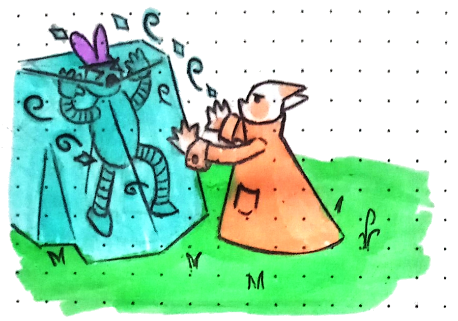

1. An intro to Wanderers!
1. An intro to Wanderers!
1. An intro to Wanderers!
1. An intro to Wanderers!
Wanderers! is an urban fantasy game. That means that its world is, in many ways, very similar to ours. There's capitalism and huge metropolises, tiny villages hidden between mountains, schools and hospitals and banks and museums. But there's also floating islands, enchanted bakeries, traveling circuses that ride on the back of giant turtles, and ancient castles hidden in plain sight by even more ancient spells. It's modern, and whimsical. It tries to integrate magic in most of daily life, but it's still filled with the wonder of discovery.
Not every corner of the world has been conquered yet, not every map drawn, not every tiny little magical bug catalogued. Not every great adventure has happened yet.
What will *you* discover?
Pokémon, Kiki’s Delivery Service.
To play Wanderers! you'll need:
- A couple of six sided dice.
- Pencil and paper.
- A character sheet for every player.
- Some snacks and beverages.
 2. Rules of the game
2. Rules of the game
For every roll made in the game, a six sided dice is used (a d6, for short).
Sometimes you need to roll multiple of them. In that case, the amount is notated as nd6, n being the number of dice to be rolled. Ex.: 3d6 means roll 3 dice.
When the notation says nd3, it means roll n sided dice and divide it by half (rounded up).
When the GM decides an action can fail and have consequences for the players, that action becomes Difficult. It can be trying to make a long jump between rooftops, hitting an enemy who is hidden behind cover, or unlocking a complicated lock. The player then rolls a d6: on a () they succeed, on a () they fail, and on a () they fail with consequences. Take into consideration your status effects when attempting a Difficult action.
When a roll is called with Advantage, it means you roll the necessary amount of dice twice, and pick the best result. Same thing with Disadvantage, but picking the worse result.
Advantage and Disadvantage can be triggered by spell effects, status effects, or by GM choice.
When a combat starts, turn order is decided by the Speed stat, from fastest to slowest. In the case of a tie, the two characters roll a 1d6, and the higher number goes first.

Every turn, you can use 2 actions and a reaction.
Those actions can be:
- Using a weapon.
- Casting a spell.
- Using an item.
- Moving one distance range.
- Dodge an attack.
You can repeat any action you want, but you cannot take more than two total actions. Talking to another character, unless it is a long conversation, is a free action.
In between your turns you can take a reaction. A reaction can be any action used to interrupt someone else's action. After the other character announces their action but before they roll any dice, you can ask your GM if you can use a reaction to interrupt them. The GM then decides if it is appropriate and possible, and the interrupted character has to roll against the player that used their reaction. Both roll a Speed roll, and the winner goes first. If you use a reaction, you can't do so again until your next turn.
Every attack and spell, unless the GM decides it is a Difficult roll, always hits.
Most items occupy one space in the inventory. Very small items, like leaves, seeds or coins occupy half a space, and very big items, like a big pumpkin, a small creature, or a bag full of stuff occupy two spaces. Huge characters have 24 spaces in their inventory. Normal characters have 12 spaces. Tiny characters have 3 spaces.
Distance is measured in ranges. Close range is approx. 2m around an object or creature. Near is between 2m and 10m. Far is between 10 and 50m. Anything further than that is Too Far.
If your inventory is filled to 50%, you Speed is reduced to Slow. If your inventory is full, your Speed is reduced to Very Slow. If your inventory is completely empty, your speed is raised to Fast.
You can cast every spell of your level and lower, if you have the components. Your element or elements determine your natural spells: spells you know innately, based on your connection to your chosen primordial witch.
You can craft or find spellbooks to learn spells from different elements. They can range from a full encyclopedia to small zines. You need to hold the spellbook to cast a non-natural spell.
Any spell can be casted at a closer range than specified, but not further away.
Spells with the ø symbol next to their component don't use the component while casting them.
Every character has 20 spell slots. For every spell slot used over 10, roll 1d6.
1-10: free,
11-15: () receive 1HP damage,
16-20: () receive 1HP damage.
+21: () receive 1HP damage.
You can spend a struggle dice to reroll once; if you fail, the spell is cast as Powerful and you spend 2 slots.
Status effects are temporary conditions any character can have. They modify different elements of the game, like your movement, size, dice rolls, etc. Most of them go away after a short or long rest, but some of them have specific conditions that have to be met for the effect to fade away.
Below is a list of the most common status effects. Like with the rest of this manual, feel free to add your own!
 3. Creating a character
3. Creating a character
Players are encouraged to create their own rules for their species along with the GM.
Don't limit yourselves to only real species: you can be a bull, a two headed hydra, a huge spider, a tiny mouse, a wooden automaton or a stuffed dragon. The examples given in this book are mostly animal-like, but feel free to be as anthropomorphic as you desire.
Below is a list of attributes any species could have:
Take into consideration the physicality of your character and how they'll interact with the world. How do they move in a crowded place? Where do they sleep? How can they carry and access a backpack? Do they need assistance to get to higher places? Talk to your GM about these characteristics and how they might give you Advantage or Disadvantage in certain situations.
Every character in the world has a personality and a voice. They can be shy or very brave, smart or a little dumb, quiet or loud, reserved or a total showoff. Feel free to interpret your personality while playing the game, however you see fit. You can even give them a funny voice to use while interpreting them!
Each level you gain access to every spell of your element and level. Each even-numbered level you gain a struggle dice.
Starting a campaign at level one is recommended for players who want the full experience of building their character from the ground up, giving them more time and opportunities to know them.
Starting a campaign at level three is recommended for players who want to skip the dangerous parts of having low HP and not a lot of spells at their disposal, and want to jump into an experienced character with a background in adventuring.
As a rule of thumb, players should level up every session the GM considers eventful enough (the players won a battle, explored a dangerous dungeon, or charmed an important NPC).
Every level up, each player rolls 1d6 and adds that number to their max HP.
Leveling up doesn't necessarily mean your character grows stronger. It mostly means your connection with the primordial witches and the magic they provide the world grows stronger.
 4. Running the game
4. Running the game
Whenever a player attempts a Difficult action that you consider to be particularly complicated to them, due to their physical, mental or social characteristics, you can call for that roll to be made with Disadvantage. Conversely, if they have certain attributes that would make that action easier for them specifically, call Advantage and give them a boost.
Want to create 10 new Blossom spells for a botanic-centric session? Your party is visiting a haunted mansion and you need to fill it with spooky goodies? One of your players *really* wants a robot turtle pet? For those very specific cases where the manual just doesn't have the thing you need, you can use the homebrew cards! Blank templates for spells, items, creatures and status conditions.
 5. The world of Wanderers!
5. The world of Wanderers!
When the world was first created by the gods, it was a cacophony of chaos and wild magic that lasted for centuries. With time, the chaos gave way to some of the natural elements we see in the world today: mountains, oceans, caverns and deserts. That initial energy eventually settled down and gravitated toward itself, collapsing with time into 8 little beads. Those beads were the souls of the 8 Primordial witches, the magic of that initial chaotic world concentrated and given form.
They created their own bodies, and following their own selfish and selfless desires, brought life into this barren land we call our planet. Some even documented their creations in ancient books or monuments. But, eventually and after some time unknown, the witches abandoned their bodies to better communicate with the creatures of the world, who were calling to them to use their magic for themselves.
Whenever someone uses any type of spell, they’re communing with these Primordial Witches and asking them for favors and their good will. The better the communication, the more power these Witches provide.
Everything in the world, from the smallest pebble to the largest dragon, has an element. They are attached to a Primordial Witch by their physical composition, their magical properties and the strength of their souls. This attachment allows some creatures to cast spells and use the world to their advantage in various ways, like traveling through leylines, combining components to create wondrous items, and grow stronger than they could ever imagine.
These elements are Spark,
Blossom,
Tear,
Dust,
Rust,
Snow,
Rock, and
Patchwork, and each one governs a corner of this world.
 6. List of spells
6. List of spells
 7. Tables
7. Tables
 8. Credits
8. Credits
v0.1 - First draft